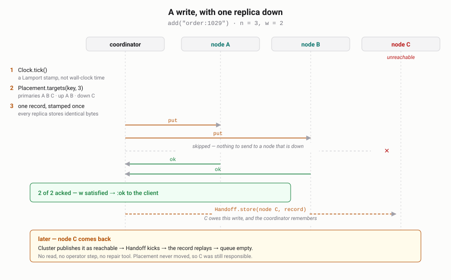

One constraint, followed all the way down — and the five bugs that only turned up once I stopped describing the thing and started measuring it.
There is a question that keeps coming back in different clothes. Have I already seen this? Deduplicating a message bus that redelivers. Idempotency keys on a payment endpoint. Rate-limit buckets. Blocklists. A crawler's set of fetched URLs.
Every general-purpose store can answer it, and each one charges for generality this question does not need: a value to put somewhere, a leader to elect, a merge to resolve, a scan to avoid, a JVM to tune. So I went the other way and built a store that supports exactly one data type — the key — to find out what that buys.
The short version: more than I expected, and the interesting parts were not the ones I designed.
With no values, two concurrent writes to the same key cannot disagree about anything except whether the key exists. That collapses the hardest problem in a replicated store into a comparison of two integers:
{key, lamport, node, alive?, wall, expires_at}
def merge(a, b), do: if newer?(a, b), do: a, else: b # total order on {lamport, node}Commutative, associative, idempotent. Two replicas that have seen the same writes
agree, in any order, with nothing exchanged. Compare what the application has to do
elsewhere: read a vector clock and resolve siblings in Riak, reason about per-cell
timestamps and gc_grace_seconds in Cassandra, write conditional
expressions in DynamoDB. Here it does nothing, because there is nothing to lose.
The per-key metadata is four fixed fields and does not grow with the cluster or with write history — unlike a vector clock, which grows with every actor that ever touched the key.
Two more things fall out. There is no leader, so there is no election and no pause
during failover; any node coordinates any key, and losing one costs capacity rather
than availability. And because a key is its own payload, the replica-local answer is
a single :ets.lookup in the caller's own process — no mailbox, no copy,
no serialisation. That path measures 338 nanoseconds.
Partway in it became obvious that the data model already existed somewhere else. In Plan 9, data is a name in a namespace — and a set with no values is a directory of empty files. The mapping is not a metaphor, it is the same structure:
stat → member? walking to a key fails with ENOENT when it is absent
create → add
remove → deleteSo the store speaks 9P as a second frontend. Mount it, and you inspect the database
with ls, cat and stat, with no client library
at all; control files replace a pile of admin endpoints. Adding the whole thing
changed nothing in the replication core.
Plan 9's union mounts came along for free too. bind -a makes one name
resolve through several directories in order, which — for a store that holds only
keys — is exactly set union. Named sets compose at read time, copying nothing:
member_any?(["blacklist", "greylist"], key) is three concurrent quorum
reads that stop at the first true.
Where Plan 9 does not fit, it does not fit hard, and the honest thing is to say so: 9P is stateful and walk-oriented, which is the wrong shape for fanning a write out to replicas, and it has nothing to say about quorums. Nodes replicate over Erlang distribution. 9P is a client frontend and nothing more.
Three nodes on one machine, n=3 r=2 w=2. Kill a node, write ten keys,
bring it back, read the keys so read repair can heal it. It healed eight.
The immediate cause: read repair only fixes replicas that answered, and a quorum of two returns as soon as two of three have replied — so the third usually misses its own repair. The deeper cause was worse. The ring was built from reachable nodes, so a node that went down dropped out of the preference list entirely. Ownership moved on the way down and moved back on the way up, and in between nobody was responsible for the writes the absent node missed. There was nothing accumulating for it because, as far as the ring was concerned, it was not a replica.
The fix is the Dynamo one: build the ring from every node the cluster has ever verified, and apply reachability on top as a separate set. A key's replicas then do not move when a node blinks — it keeps its share of the keyspace, and the writes it could not take become a hint queue that drains when it returns.

Same scenario afterwards: ten keys queued as hints while the node was away, replayed on rejoin, 30 keys on all three nodes, queue empty, and not a single read involved.
Writing up the performance numbers meant replacing estimates with measurements, and the first measurement found something embarrassing. A single-node write cost 51 µs, and profiling each layer put 42 of them in one place: working out which nodes own the key. That is a SHA-256 and a binary search. It should be under a microsecond.
def ring, do: :persistent_term.get(@pt_ring, empty_ring())Elixir evaluates arguments eagerly. empty_ring() builds a 128-point
consistent hash ring — 128 hashes and a sort — and it was being built on
every single request, as the default value for a key that was always
present. A lazy default:
| Operation | Before | After |
|---|---|---|
| Placement lookup | 42.19 µs | 0.32 µs |
Kurwa.add | 51.34 µs | 4.88 µs |
Kurwa.member? | 49.08 µs | 2.80 µs |
Ten times faster on the write path, from deleting one pair of parentheses' worth of eagerness. It had been there since the first commit, invisible, because nothing in the test suite cares how long a correct answer takes.
The HTTP gateway measured 113,000 requests per second with keep-alive and 5,900 without, so I wrote that connection reuse is worth 19×, and put it on the site.
It is worth about 4×. The 5,900 figure was taken by hand immediately after a
30,000-request run, and it was counting sockets stuck in TIME_WAIT
rather than anything about the server. Measured properly, from a script, on a fresh
node: 32,500.
This is why the benchmarks now live in the repository instead of in my shell history. Every number on the site and in the docs is produced by a script anyone can run, and a version that is slower than the one before it is treated as a broken release rather than a new baseline.
The correction is still in the docs with the old figure struck through, because a silently restated number is indistinguishable from a number nobody checked.
Automating the three-node scenario turned up one more thing. A node whose BEAM was killed came back with nothing, not with what it had: the write-ahead log append was sitting in a buffer the periodic fsync had not reached yet.
Which means a replica falls behind in two different ways, and only one of them was covered:
| How it fell behind | Who knows | What fixes it |
|---|---|---|
| Unreachable when the write happened | the coordinator | hinted handoff |
| Acknowledged the write, then crashed | nobody | read repair only |
The second row is why there is now a setting that fsyncs every write for anyone who wants the window closed — and why the next thing built was active anti-entropy: a background pass that compares replicas and repairs what it finds, whether or not anybody reads the keys.
That part had a pleasant surprise in it. Anti-entropy is normally a Merkle tree, so that two replicas holding millions of keys can compare roots and descend only where they differ instead of shipping everything. With no values, the tree is not worth building. A leaf digest is a hash over a handful of fixed-size fields, and the entire vector of 4096 bucket digests is 32 KB — one message, one round trip, no descent at all. The comparison a tree exists to avoid turns out to be cheaper than the tree.
The test is the scenario that motivated it: kill a node hard so it loses eight writes it had already acknowledged, restart it, read nothing, run one repair round. All eight come back.
On one laptop, all three nodes sharing the same CPU: a local membership check in 361 ns, a quorum across three nodes in about 40 µs, 64,600 writes and 68,600 reads per second at 64 concurrent clients, 131,000 requests per second through the HTTP gateway with keep-alive, and 128 bytes of RAM per key. How the quorum got from 52 µs to 40, and why the HTTP figure is not comparable with the earlier ones, is further down.
Figures from different days on a laptop come from different machines. Between September and October this one got slower at anything that uses every core: the September release, checked out and run again, lost 10–20%, and so did the same Redis binary with the same client, 142,600 down to 102,400. So only figures taken side by side on the same day are compared below.
That last number is the one that decides how much a machine can hold, which is why there is now a second engine. It keeps recent keys in memory and older ones in immutable sorted files, with nothing in RAM per table but a Bloom filter and a sparse index — three bytes per key rather than 128, so the same machine holds about 43 times more. The filter is what makes that work, and it pays off in the direction that matters: at first, a key that is there cost a seek at 11.8 µs, and a key that is not was answered from memory in 380 nanoseconds, faster than the in-memory engine manages. For a store whose usual answer is "no, not seen", the common case is the fast one.
Both engines answer the same behaviour contract, and the way that is checked is by running the entire test suite against each of them rather than asserting it.
The Bloom filter is the read path of the on-disk engine, so it was the obvious thing to make fast. In Rust, a membership check on a filter that has to examine every probe went from 2 728 ns to 45 — sixty times.
The end-to-end number is the one worth quoting, and it is much smaller: an on-disk read of an absent key went from 380 ns to 280, about 26%. Once the filter stopped being slow it stopped being most of the cost. A present key barely moved at all.
A sixty-fold improvement to a function is a twenty-six percent improvement to the operation. That is not a disappointment, it is the reason to measure instead of assert — the next thing worth touching is now somewhere else.
A present key still cost 11 µs, so I timed the pieces of that read rather than guessing at it again:
:file.pread of the block | 7.2 µs — 83% |
| decode, index search, calls | 1.4 µs — 16% |
| the Bloom filter | 0.05 µs — 1% |
The function I had just made sixty times faster was one percent of the read. What
cost everything was a one-line decision made weeks earlier: the file handle was
opened without :raw, so that any process could use it. A non-raw handle
in Erlang is a message round trip to the process that owns the file. The same 1 KB
read, measured both ways: 6.41 µs shared, 1.46 µs raw.
Raw handles belong to the process that opened them, so a table cannot keep one and hand it round — which is why I had avoided them. The fix is that a table now holds no handle at all. It is plain data, which is what belongs in shared storage anyway, and each reading process opens its own raw handle on first use and keeps it, capped so a compacted-away table cannot pin inodes forever.
| On-disk read of a key that is present | |
|---|---|
| before any of this | 11.8 µs |
| Bloom filter in Rust | 11.0 µs |
| key moved out of the encoded payload | 10.0 µs |
| raw file handles, in the benchmark | 3.6 µs |
Three times faster overall, and the part that did almost none of it was the part written in Rust. I do not regret the Rust — the filter is now genuinely free, which is why an absent key answers in 200 nanoseconds. But if I had profiled the pieces before reaching for a faster language, I would have found the 83% first, and it was a one-line change.
What is not in Rust is the more deliberate half. The rule for what may cross over is: a narrow interface, pure CPU, no I/O, no awareness of the cluster, and short enough never to hold a scheduler. That excludes almost everything here. The entire node-to-node protocol is 79 lines of Elixir, because the runtime already provides the transport, the framing, the serialisation, the timeouts and the up/down events. In Rust those 79 lines are a few thousand — and they are the part that is hard to get right. Both cluster bugs in this project were ten-line fixes precisely because the transport underneath already worked. So the split is the one Riak made with LevelDB, not the one Scylla made by rewriting Cassandra in C++.
It is optional, too: without cargo the project compiles, the Elixir
implementation is used, and a test checks that the two agree on six thousand probes.
A filter that disagrees with itself is a filter that says no to a key it holds.
That 3.6 µs was true, and it was not what a request paid. Measuring the on-disk engine over HTTP for the first time — a million keys loaded, eight tables on disk, a key from the first batch — it answered 47,800 requests a second against 104,000 for the in-memory engine. A 3.6 µs read cannot halve anything at that rate.
A raw handle belongs to the process that opened it, so the fix had cached one per
process. The benchmark reads from a single process, opened each file once, and never
saw the cost again. A real read never runs in a process that lives: the quorum gives
every replica call a fresh worker so that late replies die with it, and a call from
another node arrives through :erpc, which spawns one too. So every read
opened the file, read one block, and closed it as the worker exited.
| On-disk read of a key that is present | |
|---|---|
| 0.7.0, a shared handle | 11.0 µs |
| 0.8.0, from the benchmark's one process | 2.55 µs |
| 0.8.0, from a fresh process — what a request did | 28.7 µs |
| 0.8.1, a pool of readers that own the handles | 3.4 µs |
The release that was three times faster in the benchmark was two and a half times
slower in use. The fix is a reader per scheduler that opens each table once and keeps
it: a read sends it the path and the range, and gets the block back as a
reference-counted binary, so nothing is copied. One message each way instead of an
open and a close.
This is the second bug in this article that no test could have found, because the answer was right every time. The lesson is narrower than "measure": measure the path a request takes, from the process it takes it in. The benchmark now does.
Redis's own guide is blunt that comparing one benchmark tool's output to another's and extrapolating is pointless. It is right, so I did not do that: I built Redis 8.0.3 here and ran both servers on this laptop, one at a time, asked the same question by a client with the same concurrency. Then I did it twice more, and the second time I found the clients had been the ceiling all along — so these figures are from the third: four client threads on each side, a million requests, three runs each.
A million 13-byte members:
| Bytes of RAM per key | |
|---|---|
redis SET, hashtable encoding | 30.2 B |
| kurwadb, in-memory engine | 128.1 B |
| kurwadb, on-disk engine | 3.0 B |
| a Bloom filter on its own | 1.2 B |
Membership over the wire, one node, no replication on either side:
redis SISMEMBER (RESP) | 142 800 /sec |
kurwadb GET /k/:key (HTTP + JSON) | 118 900 /sec |
| kurwadb, same question across a 3-node quorum | 68 600 /sec |
An earlier version of this article guessed that Redis and the in-memory engine were in the same league on memory. They are not: Redis is four times better. Some of that gap is what we store — a kurwadb record carries a Lamport stamp, the node that issued it, a tombstone flag, a wall clock and an expiry, about 40 bytes of content against Redis's 13, because those five fields are what make it replicate and expire. The rest is BEAM term overhead.
The interesting direction is the other one. The on-disk engine uses ten times less memory than Redis, and that is not a language question at all: what is in RAM is a Bloom filter rather than the keys.
Redis is about 20% faster on throughput. For one day this article
said it was a tie — 102,400 against 103,300, inside 2% on every run — and I read
that as both servers having outgrown their storage. It was both clients
having hit theirs. ab is one thread, and so is
redis-benchmark unless told otherwise. Against the same kurwadb node at
the same 64 connections, one ab read 96,900 requests a second and four of
them, summed, 133,900. Given four client threads each, Redis pulls ahead again.
I put that remaining gap down to HTTP and JSON against a binary protocol, and wrote
that closing it was a protocol question. So kurwadb learned RESP, and the same
redis-benchmark drove both servers: one request at a time, Redis still
answers 15–20% more, and kurwadb answers RESP exactly as fast as it answers HTTP.
The protocol was never the gap. It is the cost of a request inside the server — a
process per connection, a placement lookup, a quorum of one — and pipelined, where
Redis's single thread over one dictionary is at its best, it leads by 2.2 times.
That is a real result about Redis, not a flaw in the measurement, and it belongs
in the same table as the memory figure that goes the other way.
The site used to list the on-disk engine at "115–123k" over HTTP as well. The script never measured that: it writes a single key into whichever engine is the default, so the figure was the in-memory one copied across. Measuring it properly is what found bug four. With a million keys and the one asked for on disk:
GET /k/:key, 1M keys, 64 clients | In-memory | On-disk |
|---|---|---|
| key present | ~122 000 /sec | 92 000 /sec |
| key absent | ~117 000 /sec | 116 000 /sec |
A hit from disk costs a quarter of the throughput; a miss costs nothing, because the filter answers it without touching the file. The data set sits in the OS page cache here, so "from disk" means a syscall answered from memory — the steady state for a set that fits in page cache, and the best case for one that does not.
With the clients out of the way, the next number to take apart was the cluster: a read across three nodes cost 52 µs. Timed in pieces, from inside one of the nodes:
the whole read, n=3 r=2 | 52.5 µs |
| a bare message to another node and back | 29.9 µs |
:erpc.call to another node, doing nothing | 40.3 µs |
| the quorum's own processes, no work in them | 4.4 µs |
Thirty microseconds is one round trip through the kernel's TCP stack on loopback, and
no code of mine shortens it; on separate machines it becomes the network. The rest
was mine. :erpc spawns a process on the far node for every call, which
was ten microseconds on top of the round trip, and the quorum started a collector and
then a worker per replica just to wait for each answer.
So a read or write now goes as a plain message to one of sixteen long-lived processes
on each replica, and the collector sends them itself — sending does not block, so the
workers had nothing to do. The first version was slower than before, 56 µs,
because I had put a monitor on each remote process so that a dead node would fail the
request at once. Monitoring a process on another node is two more signals over the
wire. monitor_node gets the same answer from the local distribution
layer without sending anything, and costs about a microsecond.
3 nodes, n=3 r=2 w=2 | Before | After |
|---|---|---|
| a read, one client | 50.9 µs | 40.8 µs |
| writes, 64 clients | 46 200 /sec | 64 600 /sec |
| reads, 64 clients | 48 000 /sec | 68 600 /sec |
Making the quorum faster made one cluster test fail more often — the test that rewinds a replica to a newer delete underneath the cluster, reads to repair it, then adds the key back and expects to see it. It had been flaky for days on the on-disk engine, and I had filed it under timing. It was a bug.
A write is stamped by the clock of the node that coordinates it. The repair that the
read triggered goes out asynchronously from a different node, so the add that
followed could be stamped by a coordinator that had not heard of the delete yet — with
a lower stamp. Every replica then kept the delete, as last-writer-wins says it should,
and every replica answered ok with the version it kept. The coordinator
counted those as acknowledgements. The client was told the key was added; it was
not.
The fix is to read the answers. A replica already returns the winner of its merge; if that is not the record the coordinator sent, the coordinator raises its clock past it and writes once more, with the stamp it would have used had it known. On the common path every winner is the record just sent, and it costs nothing. A test now builds that state on purpose and failed until the change; the flaky one has passed twenty runs in a row since.
It took a performance change to expose a correctness bug, which is the argument for not leaving a flaky test flaky. "Fails one run in three" was the only symptom of a write that could be acknowledged and lost.
Plan 9 turned out to be the first of several. kurwadb now also answers the
PostgreSQL, MySQL, Redis, MongoDB and SQL Server wire protocols, so psql,
mysql, redis-cli, mongosh, sqlcmd
and the drivers people already have connect to it as they are. With HTTP, that sounds
like seven products. It is one, and the reason is worth showing, because
it is the same reason 9P cost nothing: the store underneath was never told what a
protocol is.
Follow one query. A Python program, through psycopg, asks
SELECT key FROM seen WHERE key = $1 with 'order:1':
psycopg Parse, Bind, Execute, Sync - PostgreSQL protocol 3.0
│
Kurwa.Pg.Server one process per connection; bytes into messages
│
Kurwa.Sql text → tokens → {:select, from: "seen", where: key = $1}
│ → Namespace.member?("seen", "order:1")
│ ── below here, nothing knows which protocol asked ──
Coordinator storage key <<4, "seen", "order:1">>; ring → replicas A, B, C
Quorum the local replica inline, the others by message; wait for r = 2
Store ETS lookup - or memtable, Bloom filter, one pread of a block
│
Record {key, lamport, node, alive?, wall, expires_at}, merged by
│ last-writer-wins; a replica that lagged is repaired
Exec true → one row, ["order:1"]; false → no rows
Kurwa.Pg RowDescription, DataRow, "SELECT 1" - one write to the socketThree different things get parsed, by three different layers. The wire is
the frontend's: framing, parameter types, text or binary formats, authentication —
all of it protocol-specific, none of it about keys. The meaning is the SQL
layer's, and it is shared: MySQL arrives through a different codec and a different
lexer dialect — backticks, ? parameters — and leaves through the same
parser and executor as one call, member?. And the data is the
core's, which receives that same call whether it came from HTTP, a 9P
stat, a SQL SELECT, a Redis SISMEMBER or a
MongoDB find.
As for "the value it returns": there is none to return. A record holds a key, a
Lamport stamp, the node that issued it, whether it is alive, a wall clock and an
expiry — and nothing a caller wrote other than the key. So the answer to a query is
the key itself, or no row; and the only other thing a table can be asked for is
ttl, which is derived from the expiry. That is not a limitation of the
frontends, it is the constraint this article started with, showing up at the far
end of the pipe.
What each protocol cost was almost entirely its own conversation, not the data.
PostgreSQL needed enough of pg_catalog for \dt to list
sets, SCRAM, and TLS with channel binding. MySQL needed the system variables its
client asks for before you have typed anything, and columns named by their source
text, because dictionary cursors look them up that way. Redis needed nothing it
did not already have, except honesty about GET, which is an error,
because there is no value to get. The one change that went into the core for any of
them was add_new, the conditional add behind SET NX,
INSERT IGNORE and ON CONFLICT DO NOTHING — and that one was
a guarantee the store should have offered anyway.
The same shape predicted what MongoDB would take, so I wrote the prediction down
and then built it: a frontend for OP_MSG and BSON, and a table of commands mapped
onto calls the core already answers. A collection is a set; a document is
{_id: key}. A string _id is the key itself, so the
collection seen is the same set SQL calls a table and Redis calls a
set.
| MongoDB | kurwadb |
|---|---|
find({_id: "a"}), {_id: {$in: […]}} | a membership check per key, returned as a cursor that needs no getMore |
insertOne({_id: "a"}) | add_new — and a second insert gets MongoDB's own E11000 duplicate key |
updateOne({_id}, {$setOnInsert: {}}, {upsert: true}) | the same, spelled the way MongoDB users dedup |
deleteOne({_id: "a"}) | n: 1, or n: 0 if it was not there |
countDocuments({_id: …}) | the members among those — the driver sends it as an aggregation |
find({}), a filter on anything but _id | refused: it would be a scan |
a document with fields other than _id | refused: there are no values to keep |
An _id that is not a string — an ObjectId, a number — is stored under
a key made from its BSON bytes. It never has to be turned back into a value,
because nothing here lists keys: every answer is about an _id the
client named, so the reply is the value it sent.
Two things fit better than expected. MongoDB already treats a duplicate
_id as an error, so the single-winner insert that SQL and Redis needed
as an extension is simply MongoDB's ordinary semantics. And the cluster had a
ready-made disguise: every node answers hello the way a
mongos router does. PyMongo, given three kurwadb nodes, reports the
topology as Sharded and each node as a Mongos; it wrote 200 keys,
I killed one node, and the next 200 writes all succeeded, a repeated
_id was still refused, and the first 200 were all there. That is the
literal truth of a leaderless store — any node takes any request — and it needed no
pretend primary.
The cost was the conversation, as predicted: hello over the legacy
OP_QUERY that drivers still use for their first message, buildInfo,
sessions on every command, the questions mongosh asks at startup,
SCRAM-SHA-256 over saslStart — the PostgreSQL frontend's own SCRAM, in
different envelopes. Nothing below the frontend changed. The official Node.js
driver tops out at about 77,000 lookups a second against one node, and that is the
driver's ceiling on a shared laptop rather than the server's: decoding the message,
running the command and encoding the reply costs the server 5.7 µs, of which the
lookup is 0.9.
Microsoft's protocol, TDS, carried the same SQL as PostgreSQL and MySQL with a third
dialect in the lexer — [brackets], @named parameters,
TOP, OUTPUT inserted.[key], and T-SQL's habit of running
statements together without semicolons. Its idempotent insert,
IF NOT EXISTS (SELECT … WHERE [key] = @k) INSERT …, is recognised whole
and becomes add_new, so two racing batches still produce one row.
What took the time was encryption. Current SQL Server drivers encrypt by default, and
TDS 7 does it inside its own framing: the TLS handshake travels as the payload of
PRELOGIN packets, both ways, and only afterwards do TLS records go over the socket
bare. Erlang's :ssl accepts any transport that looks like
gen_tcp, so the fix was a small process standing between the socket and
:ssl that wraps what goes out and tells the two kinds of incoming bytes
apart by their first one — 0x12 for a PRELOGIN packet, 0x14 to 0x17 for a TLS record.
A client that turns encryption off still sends its login encrypted and then carries
on in the clear, so the same process also has to hand the socket back mid-connection
without a single byte of TLS reaching the client after it.
And a server with no certificate configured has to make one, as SQL Server does. The
first, from Erlang's own test helper, was rejected by Go's x509 parser — and so by
sqlcmd — because its RSA key identifier left out a NULL that the standard
says is there; the next was rejected by macOS for lacking the extensions a TLS
certificate must have. The third is built field by field and works.
sqlcmd, pymssql and tedious run their checks against it, encrypted and
not, with sp_executesql and prepared statements. TLS is the expensive
part on the server too: 48,000 lookups a second through tedious with encryption,
80,000 without, against about 11 µs of everything else per request.
A tie with Redis on one node is not a reason to use anything. The reasons are architectural, and each one is a consequence of storing no values rather than of the code being clever. Only Redis has been measured against here; the comparisons to other systems are about what their designs make them do, not benchmarks.
w=2 of three means a write is on
two machines before the client hears "ok", and anti-entropy repairs the replica
that acknowledged and then crashed.The pattern is the one the whole project keeps finding: the cost of generality is paid in places a key-only store simply does not have. The read path was the missing piece: "it fits on disk" used to mean "it is three times slower when the answer is yes". Now it means ten times the keys per gigabyte for a quarter of the throughput on a hit and none on a miss — which, for a store whose usual answer is no, is the trade you want.
So, plainly, when not to use this:
Almost nothing in this is new. Consistent hashing with hinted handoff is Dynamo,
2007. LWW-Set is textbook CRDT. Quorums with r + w > n are from the
same paper. Directories as namespaces is Plan 9 in the eighties.
What was worth doing was taking one constraint seriously enough to follow it all the way down and see what fell out. Remove values, and the merge function disappears. Remove the merge function, and the leader has nothing left to serialise. Remove the leader, and a membership check is one lookup in your own process. Then the thing turns out to mount as a filesystem, set union turns out to be free, and six wire protocols turn out to be six thin adapters over one call.
And then you measure it, and discover the ring was being rebuilt on every request.
kurwadb is MIT-licensed, 357 tests — run against both engines — plus 19 against three real distributed nodes, and about as production-ready as that sentence implies.
Source · The case for the design · Architecture, including what is deliberately missing · kurwadb.dev